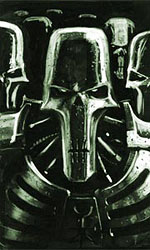
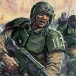

Forums galactiques > Taverne galactique : lieu de discussion informel > Club détente
Encore un atteint d' Oromarite... | 8 | |
C'est pas idiot ca ! | 17 | |
Arthérius, allez vous cacher SVP . | 7 | |
Obiwan Kénobi ^^ | 14 | |
Total : 46 vote(s) | ||
Pages : 1 2 ... 9 10 11 ... 17 18
| Alex Rider Réputation à la taverne : 748  25/04 ETU 21:03 | Score : 0 Détails Alex débarqua en trombe dans l'espace détente, et chercha Mystèrax des yeux.
(Bon sang, où elle est? Bon, j'ai que trois minutes de retard cette fois, elle va pas me laisser tomber comme une vieille chaussette...) Alex continua de chercher Mysti des yeux. Il espérait qu'elle n'était pas déjà partie... | ||
| Mystèrax Réputation à la taverne : 1216  25/04 ETU 21:11 | Score : 0 Détails Mystèrax arriva par une porte dérobée, pour cacher à Alex qu'elle était en retard.
(Pourvu qu'il ne soit pas arrivé! Ah tiens, il est là- bas. Allez ma fille, un grand sourire, ressaisis toi, vas-y) Mystèrax s'approcha de Alex et lui dit: "Bonsoir. Tu...tu est ravissant" Et celui-ci répondit... | ||
| Alex Rider Réputation à la taverne : 748 25/04 ETU 21:15 | Score : 0 Détails "Toi...toi aussi" (trouve une réplique plus inventive, la prochaine fois, Alex...)
"Euh...et pour ce qui est de la...chambre...enfin je veux dire...on monte tout de suite ou..." (-Ici ta conscience. Merde, reprends-toi mon vieux! Tu bégaies comme le dernier des imbéciles! -Tu crois que c'est facile, toi, conscience de mes d***?) Mystèrax lui répondit, sortant Alex du conflit qu'il avait engagé avec son esprit... | ||
| Mystèrax Réputation à la taverne : 1216 25/04 ETU 21:17 | Score : 0 Détails "Euh oui, si tu veux.
Arthérius m'a dit comment l'ouvrir tout à l'heure. Tu viens." Et Mysty pris Alex par la main, celui-ci se laissant entrainer à sa suite. | ||
| Alex Rider Réputation à la taverne : 748 25/04 ETU 21:21 | Score : 0 Détails Mystèrax l'entraîna dans une série de couloirs et d'escaliers torturés.
Après au moins 5 minutes de marche, ils arrivèrent devant une porte en bois tout ce qu'il y'a de plus ordinaire. Leur chambre. Alex se tourna vers Mystèrax: "Alors, comment on l'ouvre?" | ||
| Mystèrax Réputation à la taverne : 1216 25/04 ETU 21:28 | Score : 0 Détails "Il suffit de poser ta main ici (joignant le geste à la parole, Mysty posa sa main sur le réceptacle, et Alex fit de même juste après).
Accès autorisé, Mystèrax et Alex (dit la voix de l'assistante numérique)." Lorsque la porte fut ouverte, Mysty laissa échapper un "oh" de surprise. Cette suite était vraiment la plus belle du club. Tout était fait d'or, de la lampe près du lit, aux pieds de celui-ci, qui étaient en outre incrusté d'ivoire. Tant de luxe fit perdre la parole à Mysty durant quelques instants. Après avoir contemplée la pièce, Mysty entra, tenant toujours Alex par la main . "Et bien, cla dépasse mon imagination. Que de luxe. Comment trouves-tu la suite??" | ||
| Alex Rider Réputation à la taverne : 748 25/04 ETU 21:37 | Score : 0 Détails "Je...ne sais pas quoi dire...c'est magnifique..."
(-Bon, je vais peut-être vous laisser en paix, les amoureux, vous devez avoir des choses à faire... -Tu veux bien la fermer un peu, oui! Quoique je ne serais pas contre le fait que tu nous laisses un peu TRANQUILLE, maudite conscience! -Hum, après réflexion, désolé, je ne peux pas faire ça. Je suis ta conscience, je n'ai pas d'autre choix que de te suivre partout où tu vas... -Mais es-tu vraiment contrainte de me parler sans arrêt? -Hélas, oui...je suis là pour ça! -Ouais, ben je serais plus tranquille si tu activais le mode vacances pendant un temps...) "-Alex? -Hein? Oh, excuse-moi, c'est ma cons...euh, rien, oublie ça... -Tu es stressé, Alex? J'ai prévu de quoi te détendre..." | ||
| Mystèrax Réputation à la taverne : 1216 25/04 ETU 21:43 | Score : 0 Détails " Tout d'abord, veux-tu un verre de vin?? C'est un très ancien cèpage, il provient de l'ancienne Terre. Arthérius a eu un mal de chien pour le trouver, c'est du St-Emilion.
(Mysty servit un verre à Alex, qui semblait pensif) Et bien mon chéri, quelque chose te préoccupe?? laisse moi te détendre." Mysty s'assit à côté d'Alex, du feu semblait briller dans ses yeux, et l'embrassa tendrement. Après cette étreinte qui sembla durer une éternité, Alex dit: | ||
| Alex Rider Réputation à la taverne : 748 25/04 ETU 21:52 | Score : 0 Détails "C'est ça que tu avais prévu pour me détendre? En tout cas, c'est très réussi..."
Alex serra Mystèrax dans ses bras. Elle la rendait si heureux...si seulement il n'y avait pas cette... (-Bonsoir, ici ta maudite conscience. J'espère ne pas t'avoir trop manqué pendant que vous vous bécottiez...Alex?...................... Alex? Bah, réponds-moi, quoi! Dis-moi de la fermer ou quelque chose comme ça...ALEX?) "Excellent vin, Mysty...il me semble en avoir déjà goûté, du temps où je vivais encore sur l'ancienne Terre..." | ||
| Archange Ezekiel Réputation à la taverne : 37  25/04 ETU 21:55 | Score : 0 Détails ([en chuchotant] hihi , super cette caméra dans la bouteille , merci Artherius , je vais tout voir ^_____^ , je vais tout voir du début à la fin , nierknierknierk .....)
| ||
| Mystèrax Réputation à la taverne : 1216 25/04 ETU 21:56 | Score : 0 Détails " Je sais, je suis très doué pour ça. Si nous passions aux choses sérieuses..."
Et Mysty embrassa de nouveau Alex, en commançant à déboutonner sa chemise, qui laissa apparaître un torse musclé. Alex l'interrompit et lui dit: | ||
| Alex Rider Réputation à la taverne : 748 25/04 ETU 22:06 | Score : 0 Détails "-Attends!
-Quoi? -J'ai une impression étrange...comme si un journaliste du 7pas chouette nous observait en ce moment... -Pourquoi forcément un journaliste du 7pas chouette? -Hein? Oh, j'en sais trop rien, c'est juste un pressentiment...intuition masculine", plaisanta-t-il. "-C'est impossible, j'ai fait vérifier toute la pièce par le personnel de l'hôtel! -Alors, soit c'est un employé qui a placé une caméra quelque part, dans la bouteille de vin par exemple (enfin, c'est juste un exemple) soit c'est le service de chambre...en tout cas, je suis certain d'être observé, Mysty! Désolé, mais je refuse de me faire observer durant un moment...comme celui-ci." Alex commença à fouiller la chambre sous les protestations de Mystèrax... (C'est sûr, quelqu'un nous observe...mais où est planquée cette foutue caméra?) | ||
| Archange Ezekiel Réputation à la taverne : 37 25/04 ETU 22:09 | Score : 0 Détails ( où est le bouton pour rendre la cam invisible , Arthérius ?? ah , c'est bon ... [ vium ])
| ||
| Mystèrax Réputation à la taverne : 1216 25/04 ETU 22:12 | Score : 0 Détails Mystèrax se mit elle aussi à fouiller la chambre.Au bout de quelques minutes, celle-ci poussa un cri de victoire:"Ca y est, je l'ai eu!! ( Mysty vida la bouteille dans le seau à galce, et à la fin de la bouteille , un !dong! sonor se fit entendre). Ton inuition était bonne Alex, elle était dans la bouteille. J'en connais un qui va avoir de mes nouvelles demain!!"
Et après avoir jeté la caméra par la fenêtre et activé le système d'impassabilité des fenêtres, portes et autres passages, Mysty dit: "Cete fois, on est tranquille. Ou en étaient-on?, Ah oui, ça y est." Et celle-ci poussa Alex, qui tomba à la renverse sur le lit. Elle lui sauta dessus, et commença à le déshabiller comme il se doit. Celui-ci se laissait faire, ss mains se baladant le long du corps d Mysty. HRP: Le reste est censuré, pour ne pas choquer les âms sensibles. Mais il y a fort à parier que nous aurons un récit croustillant demain dans "7paschouette".HRP HRP2: Alex, tu as un MP. HRP2 | ||
| Archange Ezekiel Réputation à la taverne : 37 25/04 ETU 22:18 | Score : 0 Détails (ah!!!!! putain !!!! grrr , j'ai pas dis mon dernier mot . Archange a plus d'un tour dans son sac , haha ! Et il n'a pas qu'un sac . Envoi immédia de plusieurs camesprits invisible .)
| ||
| Ghozer Réputation à la taverne : 226  25/04 ETU 22:25 | Score : 0 Détails ARCHANGE LAISSE LES TRANQUILLLE!!!!!!
Il faut bien créer une nouvelle jeunesse!! Quoi on nous écoute? Excusez moi... Je sort? | ||
| Archange Ezekiel Réputation à la taverne : 37 25/04 ETU 22:35 | Score : 0 Détails (bravo t'as presque réussi à me faire découvrir !!! passes moi un GAF au lieu de faire des conneries ...)
| ||
| Ghozer Réputation à la taverne : 226 25/04 ETU 22:44 | Score : 0 Détails Voila!
Tient c'est bizare les brutis qu'on entend... Heuu bon, moi aussi j'vais me shooter au GAF avant d'aller me coucher jusq'a ce que je sois saoul. | ||
| Arthérius Réputation à la taverne : 1559  25/04 ETU 22:53 | Score : 0 Détails Arthérius avait senti le coup fourré en voyant Ces deux rigolos grimper à la suite des deux oiseuax ...
Il s'était planqué derrière eux, attendant le moment opportun pour frapper ... Voyant la combine détruite par mystèrax, il sonna le garde à l'aide de son X-Com ... Cala, Bouge tes fesses au lieu de mater la garde de Mysty, t'as du boulot feignasse !!! Cala fonca alors sur les deux intrus en train de mater comme des cochons , ceux ci se relevèrent brusquement et se cognèrent dans Arthérius, qui s'était discrètement rapproché ... Il en choppa un par le bras alors que l'autre s'était fait choper par Cala et la garde de mystérax ... Sapprochant alors du pomocode digital , il dit " code XO1V 345" " Alerte espion. Une voix prévint alors le couple de la capture des deux individus, qui ne tarderent pas a ouvrir la porte . " Dsl Mysty et Alex, j'ai chopé ces deux rigolos en train de vous espionner ... Que dois-je en faire ????" Deux minutes plus tard, ils étaient envoyé dans leurs vaisseaux sans aucune preuve de leur passage ici, enrobés d'une couche de ghozer au fruit périmé que tiraient les SPAT sur les espions. "Désolé du dérangement ... Tous les services ici vous sont gratuits pour la durée du sejour que vous souhaitez. Je vais monter la garde ici, Cala remplace moi et heu , mysty pourriez vous dire à votre garde que je ne suis pas un bifsteack ? " | ||
| Archange Ezekiel Réputation à la taverne : 37 25/04 ETU 23:04 | Score : 0 Détails mais heuuuuuuuu !!!
|
Pages : 1 2 ... 9 10 11 ... 17 18
Forums galactiques > Taverne galactique : lieu de discussion informel > Club détente